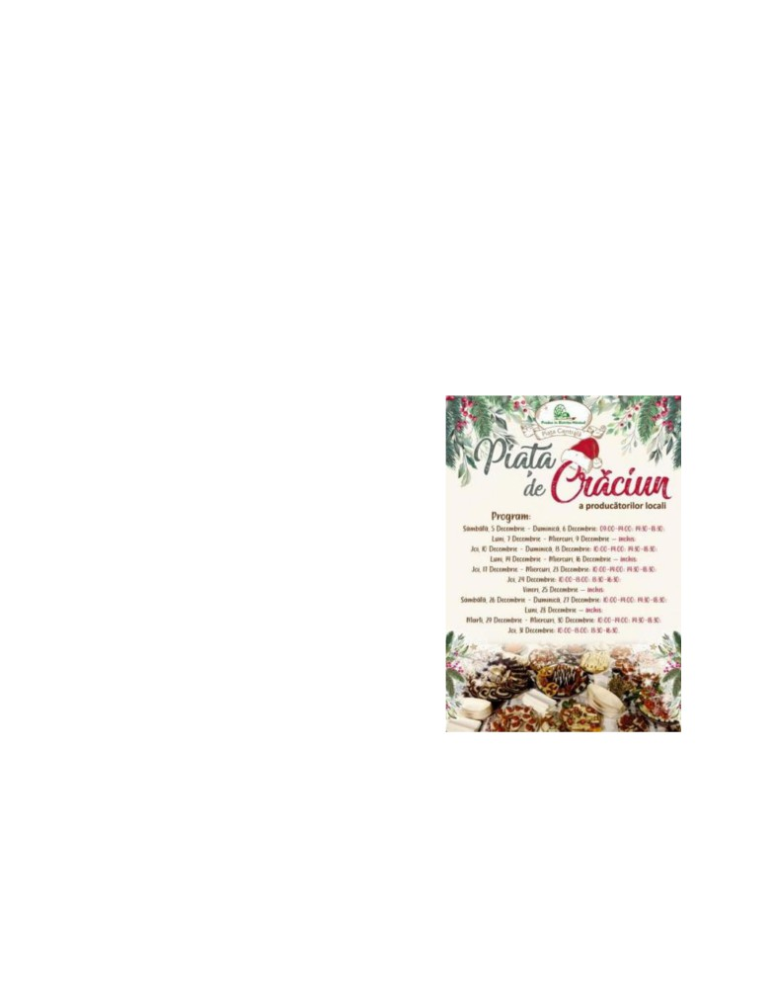
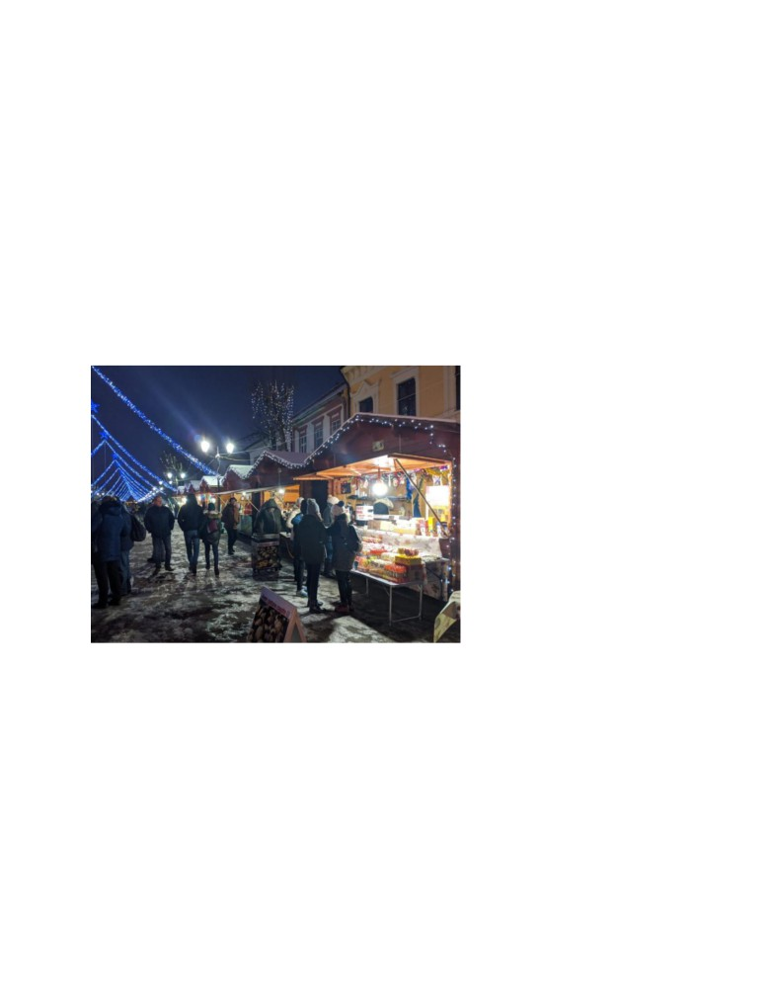

Un altfel de târg de crăciun la Bistrița
Când ne gândim la anul 2020, primul lucru care ne vine în minte este pandemia prin care
am trecut și prin care trecem în continuare. În anii trecuți, așteptam sărbătorile cu cel mai mare
drag, de la vizitele pe care le făceam membrilor familiei, colindatul și toate tradițiile ce ne aduceau
bucurie și pace, nu au mai avut farmec și anul acesta. Oricât de optimiști am încercat să fim,
sărbătorile de iarnă din anul 2020 nu au fost cele pe care le așteptam, în ciuda faptului că am
încercat să le facem încât să semene puțin cu cele cu care eram obișnuiți.
La Bistrița, primarul Ioan Turc a luat decizia încă din noiembrie că târgul de crăciun care
a avut loc în fiecare an, se va desfășura și anul acesta, respectând toate normele de distanțare
socială. Lucrul la care a renunțat a fost concertul și show-ul de artificii, care de asemenea avea loc
în fiecare an.
Târgul de crăciun a fost alcătuit în fiecare an de
tarabe la care producătorii locali ai județului nostru,
vindeau bunătățile la care au lucrat cu tot sufletul. Iar
primarul a susținut că anul acesta va face tot ce îi stă în
putință ca târgul să aibă loc. Acesta a declarat în luna
noiembrie într-o conferință de presă următoarele: „Piața
de Crăciun a producătorilor locali se poate ține, nu pot
să spun mai multe. Urmează să avem o discuție cu
asociația produs în bistrița-Năsăud să vedem dacă vom
permite și comerțul de produse artizanale, nu doar
alimentare. În rest evenimente la cumpăna dintre ani,
probabil că nu”.
Dar faptul că mă aflu la Cluj unde târgul nu a avut loc anul acesta, am decis să merg până
acasă, în Bistrița, să îmi vizitez familia și să trec pe la târgul de crăciun. Din nefericire, vremea nu
a prea ținut cu noi această iarnă, fiind foarte ploios și neplăcut. Sentimentul pe care îl aveam în
anii trecuți când era zăpadă și răsunau peste tot colinde, anul acesta nu a mai existat. Ajunsă în
centrul orașului, am fost plăcut surprinsă de faptul că bistrițenii au ieșit din casele lor, iar în limita

distanțării sociale și a purtării corecte a măștilor, cumpărau bunătăți de la producătorii locali care
în fiecare dimineță veneau și pregăteau căbănuțele.
Producătorii locali aveau pregătite mâncăruri tradiționale, deserturi tradiționale, dar și
lucruri handmade. Cea mai mare coadă era la căbănuța cu vin fiert, dar și cei ce preparau
mâncărurile tradiționale de crăciun aveau foarte mulți clienți. După ce am trecut pe la fiecare
căbănuță și am achiziționat câteva produse, am rămas plăcut surprinsă de felul în care s-au
mobilizat producătorii și organizatorii târgului. Sperăm ca în anul 2021, târgul să se desfășoare
exact cum îl știam eu, plin de colinde și de oameni fericiți.
Târgul de crăciun în 2019